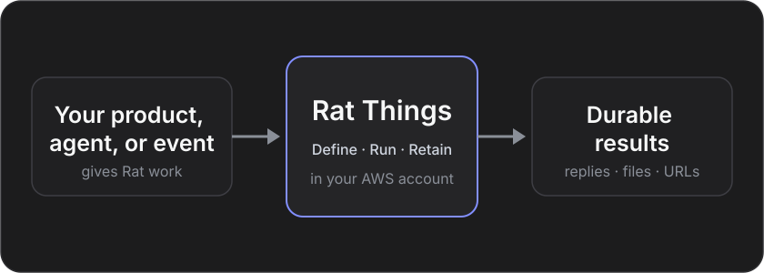

Operator or individual
CLI or small console
Create Agents and Sessions, follow streamed Items, return function results, and manage Vault credentials.
rat-things sessions list
A cloud for your agents · Self-hosted in your AWS account
Run Codex or Pi Durable on isolated workers in your AWS account. Use approved Bedrock models, keep agent state outside the worker, and start work from the API, CLI, desktop, Slack, or a schedule.
Engineering preview · self-hosted in your AWS account · not ready for untrusted multi-tenant production
Codex and Pi Durable share the same API, CLI, desktop console, schedules, and provider bindings. Choose a runtime when you create a Session, then use its approved model catalog.
Pi Durable uses Amazon Bedrock. Codex supports a deployment-configured ChatGPT login bridge or Bedrock. Each runtime has its own supported tools and settings.
rat-things agents models
rat-things agents models --runtime pi
# connect to your configured deploymentrat-things sessions create \
--runtime pi --model YOUR_BEDROCK_MODEL \
--input "Plan a repository review."
# omit --runtime pi to use Codexrat-things sessions send sess_example \
--input "Include the test strategy."
rat-things sessions items sess_exampleRat Things is a self-hosted AWS stack with no central Rat Things service. A CLI, your product, another agent, a schedule, or an authenticated provider event can use the same public API and durable Session model.
Operator or individual
Create Agents and Sessions, follow streamed Items, return function results, and manage Vault credentials.
rat-things sessions list
Embedded product
Keep customer identity and the provider app in your product or AWS account. The self-hosted Rat Things stack can run PKCE callbacks and refresh; credentials remain in your Secrets Manager.
POST /v1/agents
Agent-to-agent
Give an agent the deployment URL. It discovers the installed contract, starts with Agents and Sessions, and opens deeper controls only when needed.
GET /.well-known/rat-things
Agent quickstart
Events and schedules
Schedules select an owned Agent and environment. Provider events pass authentication before submitting Session input through their own ingress routes.
cron(0 8 ? * MON-FRI *)
The host decides whether one deployment serves one person or many authenticated users. Rat Things derives an owner from each trusted principal and keeps Agents, Sessions, Vaults, and files within that boundary.
Start with an approved request in Slack. Let one isolated Session find the source context, check Linear for existing work, and create or update the issue through exact OAuth-backed operations.
Slack and Linear are separate verified Connections. The agent receives only the accounts and operations admitted before launch; neither credential enters its prompt or workspace.
Explore integrations, accounts, and permissionsResolve the security review and confirm the rollout owner before the annual renewal is finalized.
Created from the approved #customer-ops decision. Added the two open items and rollout note.
Just now · app actorConnect Slack and Linear through deployment-owned OAuth. Rat Things verifies each provider identity and stores issued credentials in the host vault.
Select the Slack read and Linear read/write operations this Session needs. Provider scopes, grants, profiles, and resource limits all intersect.
Search the source thread and existing issues first. The agent can create, update, or comment only through reviewed GraphQL documents.
The Slack thread, Linear result, Turn and Item history, generated files, and saved runtime state remain traceable across clients and compute.
Connect both accounts, choose what Rat Things can do, and keep every handoff tied to the conversation that started it.
Install a verified Linear workspace, choose its account and operation grants, and expose the needed actions through declared MCP or application-function tools.
Sessions retain tool activity and results. Keep notification delivery separate from tool access, and enforce duplicate-creation protection in the tool implementation.
Set up LinearLinear, Slack, and Stripe are built-in examples of Rat Things' Integration Contract, not the boundary of the system. Add the OAuth or API services your deployment needs by declaring authentication, account identity, operations, schemas, and a fixed provider origin—then compile each reviewed adapter into the trusted host.
The CLI and control API use that contract to install accounts, check connection health, and manage grants. Trusted tool implementations use the same credential broker and permission checks.
Build a trusted integrationPublish authentication choices, account metadata, operation schemas, access levels, and required provider scopes.
Resolve the provider's real tenant and subject before a credential becomes an installed Connection.
Intersect provider authority, the persistent grant, the profile, and declared tools and resource constraints.
Generate safe account setup, health, reconnect, “used by,” and agent-tool surfaces from the installed contract.
Bind authenticated provider events and schedules to owned Agents and submit work through Sessions.
Extensions are trusted host code. Rat Things does not load arbitrary provider packages inside the agent. Credentials stay in the host vault, provider calls use reviewed adapters, and the agent receives only admitted operation schemas.
The reference console selects Codex or Pi Durable, creates Sessions, refreshes saved Items, submits function results, and cancels active Turns. Saved history remains available after a reload.
Manage reusable Agents and write-only Vault credentials from the same authenticated client.
rat-things sessions listreads the same durable Session resources.
rat-things consoleopens the local signed client for your deployment.
The reference console and CLI use the same Agents, Sessions, Turns, Items, environments and Vault contracts.
Accepted input belongs to a durable Session Turn. Rat Things stores Items, artifacts, and runtime state outside compute. Pi can recover pending tasks and child agents on a replacement worker. Workspace recovery follows each runtime's checkpoint and storage rules; running processes are not restored.
Authenticate the caller or provider event, then resolve the owner from IAM or an operator-owned binding.
Commit Session input with an idempotent receipt.
Resolve the saved Agent configuration and restore available native state.
Launch or resume Codex or Pi Durable with the tools and access resolved before the run.
Read saved Turn Items and artifacts. Export anything you need before deleting a Session.
Choose permissions before creating a Session. The agent can use what you allowed; everything else is unavailable. Rat Things never pauses to ask for more permission during a Turn.
Read the complete capability contractInside the envelope
Admitted shell, files, browser actions, network destinations, and connected-account operations are available within the resolved Session configuration.
Outside the envelope
The tool is missing, IAM returns AccessDenied, URL or egress policy blocks the destination, or the broker rejects the operation before reading a credential.
No suspended permission state: denied operations do not create approval requests. To change authority, configure an Agent and create a new Session with the required tools and environment.
Configure an Agent, start a Session, or bind it to a rate or cron schedule.
Verify several accounts per integration, monitor health, reconnect the same identity without rebinding workflows, and narrow provider access before use.
Expose browser operations through functions or MCP, constrain their access, and retain selected screenshots and recordings as Session artifacts.
Read Turns and Items, send follow-up input, submit function results, and continue work across clients.
Keep generated files privately, inspect them through owner-gated viewers, or create expiring external links.
API calls, schedules and authenticated provider events use the same Agent, Session, Turn and Item primitives.
Discover OpenAPI, JSON Schemas, integration manifests, stable errors, and capability profiles from each deployment.
Use Codex with your configured provider or Pi Durable with approved Bedrock models. Keep the same Session API, schedules, and result delivery.
Sessions, files, schedules, connections, and results live outside ephemeral compute. Each Session resolves its authority before execution and retains Turns and Items for connected clients.
Choose provider accounts and grants before launch. Keep provider credentials in the configured vault or trusted tool service.
The console, CLI and API read the same durable Turns and Items. Provider bindings add input and deliver saved results.
Pi recovers committed tasks and child relationships. Managed workspace recovery requires the runtime's configured storage and checkpoint path. Live processes require the original worker.
Read Session activity and saved Items, continue with new input, and download selected artifacts through the authenticated API.
Manual work, durable schedules, and authenticated provider events use the same Session lifecycle and saved-result delivery model.
Your deployment pays for its API and relay baseline, connected workers, model usage, storage and networking. A worker that preserves live processes continues to consume compute while idle.
Understand the cost driversAccount for the complete deployment
Measure startup, continuation and cost in your own region with the selected backend and model. Retention policies and explicit Session deletion control resources that outlive a Turn.
Your product, another agent, a CLI, or a signed event submits work. Rat Things authenticates it, accepts a Session input, executes it in your AWS account, and retains the result.
Architecture guide